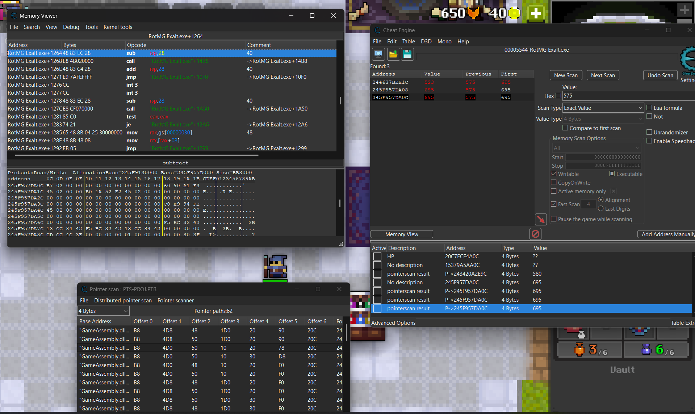

Video Game Tool
I developed an tool for a video game by combining memory analysis techniques with Python scripting. I have no experience with interracting with application memory, but I decided that I needed a challenge that would improve my understanding of low-level interfaces. Using Cheat Engine, I navigate the game’s memory by sorting though noise to find key variables such as health, mana, object states, and position. Since these memory addresses would changed every time the game was booted, I found multi-layer pointer chains to locate the required information. Once I was able to reliably access to the game’s memory, I wrote a Python scripts to find the information by calculating through the pointer chains and trigger actions that automatically save the player in a dire situation. The project required a strong understanding of how data is stored and accessed in memory. Through this process, I gained hands-on experience with low-level data handling, reverse engineering concepts, and automation design. I also improved my ability to break down complex systems, test assumptions iteratively, and build solutions that remain robust despite changing underlying conditions.
